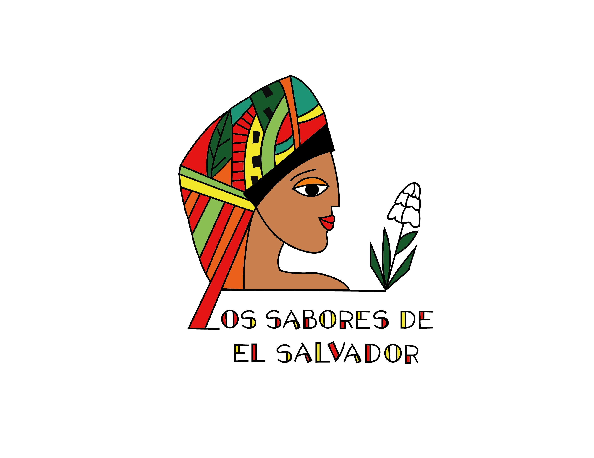

Overview
Purpose
Whe know the importance of the hight quality flavor in each teaste, in our restaurant you will be witness of the truly Salvadorian Food in all our dishes there is not limit for the age, you will enjoy it. And we want you to know our food, the next information will help you The pupusa is a thick corn or rice dough-based tortilla filled with one or more ingredients, such as cheese, pork rinds, squash, refried beans, loroco, etc. Due to its tradition, versatility and low cost, it is one of the most widespread foods in El Salvador and Honduras, countries that dispute their patrimonial origin. Although its origin is unknown for certain, it is most likely a mestizo dish, between native Mesoamerican cuisine and the Spanish culinary tradition that was imported during colonization and subsequent migrations. Several recent scholars affirm that the pupusa has a Quiché Mayan origin. Tamales are a dish that is part of the typical food of El Salvador and it is believed that they were prepared before the Spanish conquest. In addition, they were considered as a sacred food, typical of the gods. This food can be prepared with different ingredients, flavors and recipes. The preparation, dough, filling, wrapper, as well as the shape of the tamale can vary a bit depending on the country or region. Salvadoran pastelitos, also called salvadoran empanadas, are a type of stuffed, fried, succulent and crunchy empanadas that have become one of the most popular and simple fast foods in the country. Pastelitos are nothing more than small pies or cakes. They are traditional from several Latin American countries. In Costa Rica, Puerto Rico, the Dominican Republic, Trinidad and Tobago, the Caribbean, the Caribbean coast of Colombia, Uruguay, and Panama, they resemble tamales. In Hawaii, they are called patties. The cakes can be sweet or savory. Pastel is a Spanish and Portuguese word and is the name of different typical dishes from many countries that speak these languages. We challenge you to try our tasty food.
Audience
Target audience: Families, friends, students, couples, all people who is willing to wants to get a excelent flavors.
Branding
Website Logo
Style Guide
Color Palette
Palette URL:
| Primary | Secondary | Accent 1 | Accent 2 | Accent 3 |
|---|---|---|---|---|
| #edede9 | #8ABF53 | #EB601B | #F2E729 | #D91818 |
Typography
Heading Font: Raleway
Paragraph Font: Quicksand
Normal paragraph example
The pupusa is a thick corn or rice dough-based tortilla filled with one or more ingredients, such as cheese, pork rinds, squash, refried beans, loroco, etc. Due to its tradition, versatility and low cost, it is one of the most widespread foods in El Salvador and Honduras, countries that dispute their patrimonial origin. Although its origin is unknown for certain, it is most likely a mestizo dish, between native Mesoamerican cuisine and the Spanish culinary tradition that was imported during colonization and subsequent migrations. Several recent scholars affirm that the pupusa has a Quiché Mayan origin.
Colored paragraph example
Tamales are a dish that is part of the typical food of El Salvador and it is believed that they were prepared before the Spanish conquest. In addition, they were considered as a sacred food, typical of the gods. This food can be prepared with different ingredients, flavors and recipes. The preparation, dough, filling, wrapper, as well as the shape of the tamale can vary a bit depending on the country or region.
Navigation
Site Map
Wireframes
Home

Menu
El Salvador?